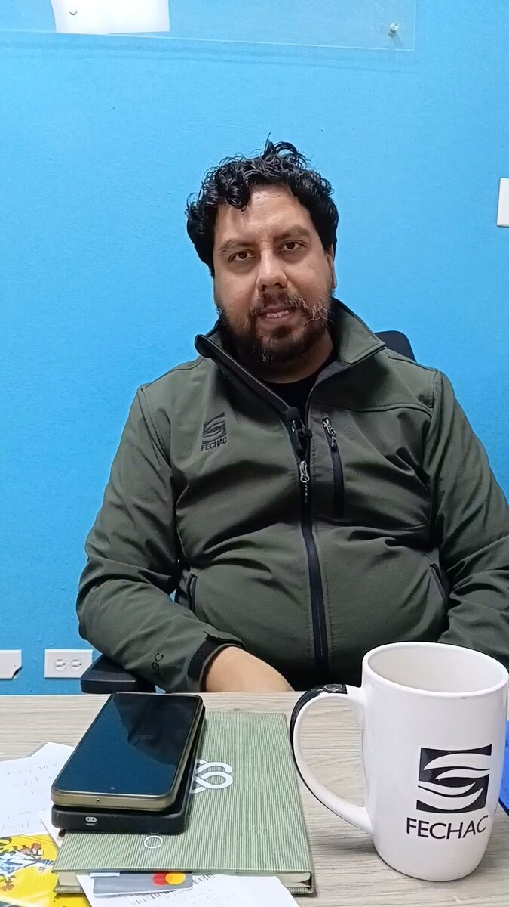
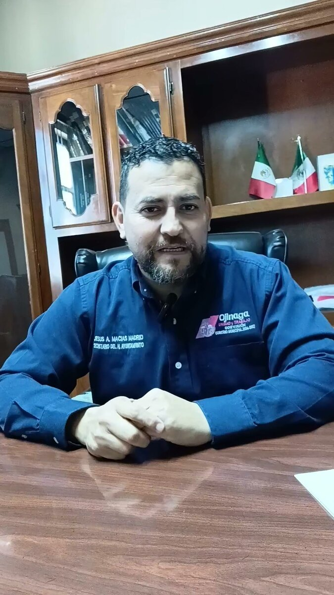
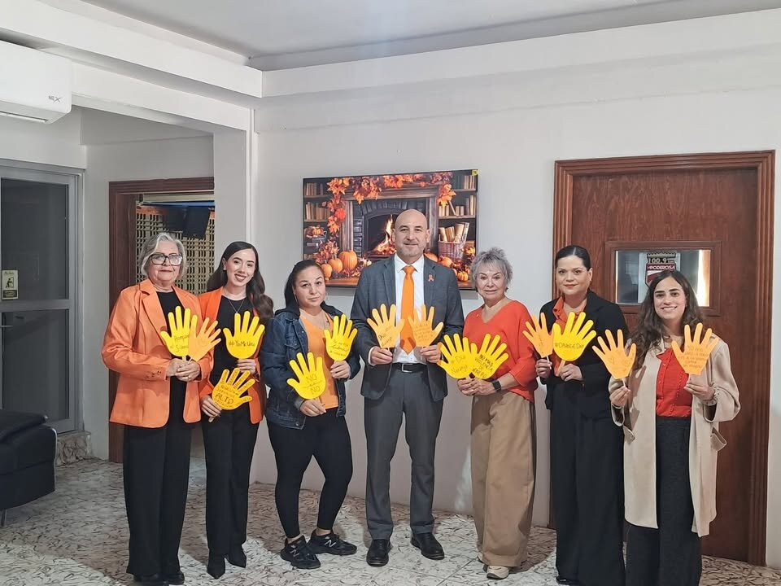

Policiaca
Aldama, Chihuahua.– Un ataque armado contra elementos de la Agencia Estatal de Investigación fue reportado al exterior del CESSA de Ciudad Aldama, lo que provocó una intensa movilización de corporaciones de seguridad. De acuerdo con información preliminar, los agentes se encontraban a bordo de un vehículo blanco estacionado en las inmediaciones del hospital regional, cuando fueron interceptados por una camioneta tipo Tahoe, color gris, cuyos ocupantes abrieron fuego. Tras el reporte, se desplegó un operativo en el que participaron elementos de Criminalística, Agencia Estatal de Investigación, Policía del Estado y policías municipales de Aldama y Chihuahua. Las autoridades mantienen un dispositivo de seguridad en la zona y en distintos puntos del municipio para tratar de localizar el vehículo señalado como responsable. Hasta el momento, no se cuenta con información oficial sobre personas lesionadas o detenidas.
Estatal
El presidente municipal, Héctor Rafael Ortiz Orpinel, informó que buscará reunirse esta semana con el director de la Junta Municipal de Agua y Saneamiento (JMAS), con el propósito de coordinar esfuerzos en la reparación de drenajes y alcantarillas, y avanzar en los trabajos de bacheo que realiza el Gobierno Municipal. El alcalde explicó que la reunión estaba prevista para este jueves o viernes, una vez que el titular de la dependencia regrese de un viaje, para plantearle la necesidad de trabajar de manera conjunta en beneficio de la ciudadanía. “Si ellos nos ayudan a hacer lo que corresponde respecto al drenaje, las alcantarillas, nosotros podemos avanzar sin lugar a dudas en todo lo que es el tema del bacheo”, afirmó. Resaltó que el Municipio continúa trabajando en la atención de los baches y en la mejora de las vialidades, por lo que consideró necesario que la JMAS atienda los derrames de agua y las fallas en la infraestructura sanitaria que afectan las calles. La coordinación entre ambas instancias permitiría acelerar los trabajos y aprovechar mejor los recursos, al evitar que las reparaciones de baches se vean afectadas nuevamente por fugas o brotes de aguas residuales. “Yo creo que si hacemos cada quien nuestra parte, coordinadamente para hacerlo más rápido, vamos a dar mejores beneficios a los ciudadanos”, comentó. El alcalde también invitó a quienes señalan falta de atención por parte del Gobierno Municipal a recorrer la ciudad para conocer los trabajos que se realizan y las condiciones de las vialidades afectadas por derrames de agua. Reiteró que su propuesta es que la JMAS destine recursos a la recuperación de la infraestructura de drenaje, mientras el Municipio continúa con las labores de bacheo, a fin de ofrecer soluciones duraderas a los problemas que enfrentan los juarenses.
Policiaca
Un nuevo hecho de violencia contra corporaciones de seguridad se habría registrado en el municipio de Aldama, Chihuahua, donde sujetos armados realizaron disparos contra elementos de la Policía Ministerial. De acuerdo con los primeros reportes, la agresión provocó la movilización de corporaciones de seguridad en la zona. Hasta el momento no se cuenta con información oficial sobre personas lesionadas, detenidos o el posible paradero de los responsables. Se espera que la Fiscalía General del Estado proporcione mayores detalles sobre estos hechos y las acciones implementadas para localizar a los agresores. La información se mantiene en desarrollo. Mira el video completo en Facebook.

Estatal
La Fiscalía General del Estado puso en marcha el Programa Estatal de Atención a Víctimas de Desaparición, que da acompañamiento y apoyo económico a familiares de personas desaparecidas en todo Chihuahua. Gilberto Loya Chávez, encargado del despacho de la Fiscalía, informó que 380 personas han solicitado el apoyo y 166 ya concluyeron el trámite, por lo que recibirán atención personalizada en los próximos días.
Estatal
Cruz Pérez Cuéllar, alcalde con licencia de Ciudad Juárez y coordinador estatal de la Defensa de la Transformación en Chihuahua, acusó al PAN de difundir imágenes hechas con inteligencia artificial que relacionan a la senadora Andrea Chávez con figuras panistas, entre ellas Marco Bonilla. Según Pérez Cuéllar, el objetivo es alimentar rumores de una ruptura interna en Morena y generar incertidumbre entre la ciudadanía. También negó estar confrontado con la senadora, aseguró que se han reunido en varias ocasiones y reconoció el trabajo territorial de su equipo en Ciudad Juárez.

Local
El licenciado Jesús Arturo Macías Rey, secretario del Ayuntamiento de Ojinaga, informa en entrevista que se aprobó la Ley de Ingresos con cambios leves. Mira el video completo en Facebook.

Local
En el marco del Día Internacional de la Eliminación de la Violencia contra la Mujer se llevó a cabo el programa especial “Voces que transforman comunidades”, en el que participaron el Consulado de México en Presidio, Texas, y Noticiero Impacto de BM Radio Ojinaga. El encuentro tuvo como propósito abrir espacios de diálogo, reflexión y participación para visibilizar la violencia contra las mujeres, promover la conciencia social y fortalecer las acciones para construir comunidades más seguras, respetuosas y libres de violencia. A través de este tipo de iniciativas se busca dar voz a quienes trabajan por la igualdad, los derechos de las mujeres y la transformación de sus comunidades. La participación conjunta refrenda la importancia de la colaboración entre instituciones y medios de comunicación para impulsar una cultura de respeto, prevención y cero tolerancia a la violencia contra las mujeres.
Policiaca
Una ciudadana alertó sobre un posible intento de extorsión a través de WhatsApp, luego de recibir mensajes de una persona que se identificó como personal de Desarrollo Urbano y Licencias de Funcionamiento. De acuerdo con la conversación compartida, el remitente, desde un número telefónico con lada de Estados Unidos, se comunicó para informar sobre un supuesto trámite número 102, relacionado con licencias de funcionamiento. La ciudadana pidió saber de qué dependencia se trataba y cuál era el motivo del contacto; ante la falta de claridad, decidió bloquear el número. Aunque no se ha confirmado oficialmente que se trate de una extorsión, se recomienda no proporcionar datos personales, documentos ni información bancaria; no hacer depósitos ni transferencias por supuestos trámites; no abrir enlaces enviados por números desconocidos; verificar la identidad de quien se comunica llamando directamente a la dependencia, y guardar capturas de pantalla para reportar cualquier intento sospechoso ante las autoridades. Antes de responder o pagar, verifica.
Local
El ingeniero Jaime Alejandro Chambers Arias, director de Desarrollo Urbano y Ecología de Ojinaga, hace en entrevista una invitación a concluir los trámites pendientes. Mira el video completo en Facebook.
Policiaca
Diana, Yeritza y Daniela sobrevivieron a intentos de feminicidio, pero su lucha no terminó con la sentencia contra sus agresores: las tres enfrentaron obstáculos judiciales y la falta de respuesta efectiva de las autoridades. En el marco del Día Internacional de la Eliminación de la Violencia contra la Mujer, sus testimonios evidencian que una sentencia no siempre significa el fin de la violencia ni garantiza que los responsables cumplan plenamente sus condenas. Diana tuvo que prolongar su batalla legal para que el hombre que la dejó en coma permanezca más de una década en prisión. Yeritza espera una audiencia para confirmar que su expareja, quien la golpeó hasta hacerle perder los dientes, continúe encarcelado. Daniela relató que durante diez años realizó labores que correspondían a las autoridades para lograr que su agresor fuera detenido. Los casos reflejan las dificultades que enfrentan las sobrevivientes de violencia feminicida para acceder a una justicia efectiva.
Nacional
Un Tribunal Federal revocó el amparo que permitía a Rubén Rocha Moya cobrar sus tres pensiones, por lo que nuevamente fueron bloqueadas las cuentas bancarias donde recibe los depósitos. Las pensiones corresponden a la Universidad Autónoma de Sinaloa, el IMSS y el ISSSTE. Según su declaración patrimonial de 2025, Rocha Moya percibe al año 731 mil 647 pesos de la Universidad Autónoma de Sinaloa, 490 mil 626 pesos del IMSS y 316 mil 102 pesos del ISSSTE; en conjunto, un millón 538 mil 375 pesos anuales. El exgobernador de Sinaloa también enfrenta señalamientos de autoridades de Estados Unidos por presuntos vínculos con el narcotráfico, acusaciones que deberán ser esclarecidas por las instancias correspondientes.

Policiaca
La fiscal general de la República, Ernestina Godoy, confirmó que sigue vigente una orden de aprehensión por traición a la patria contra Guillermo Zuany Portillo, exvicefiscal de Operaciones Estratégicas de Chihuahua, y que hasta ahora no ha sido localizado. El caso es el mismo por el que el exfiscal César Jáuregui fue vinculado a proceso. Las personas señaladas se presumen inocentes mientras no se dicte una sentencia.

Nacional
El gobierno de Donald Trump alista nuevos aranceles para 16 socios comerciales, entre ellos México, China, la Unión Europea y Japón, según medios internacionales. La medida saldría de una investigación sobre exceso de capacidad industrial. El anuncio podría llegar antes del Día de Acción de Gracias. Todavía no se conocen las tasas ni qué productos se verían afectados.

Frontera
Desde hoy, 25 de noviembre, y hasta el 8 de enero de 2027, funciona el operativo de invierno Héroes Paisanos para quienes vienen de Estados Unidos a pasar las fiestas. Se espera más movimiento en el cruce Ojinaga-Presidio por el Día de Acción de Gracias. Se recomienda traer los documentos en regla y salir con tiempo.
Nacional
Los alumnos de preescolar, primaria y secundaria no tendrán clases este viernes 27 porque es la tercera sesión del Consejo Técnico Escolar, según el calendario de la SEP. Los maestros sí trabajan ese día. Las clases se reanudan el lunes 30 de noviembre. Preparatorias y universidades siguen su propio calendario.

Local
Originarios de Coyame del Sotol y familiares que viven en Estados Unidos ofrecieron comprar el material para reparar la carretera federal 16, del kilómetro 170 al 182. Según el alcalde, es el tramo en peores condiciones entre Coyame y Ojinaga. El municipio pondría la mano de obra. La solicitud de reparación ya se presentó a la SICT, que todavía no responde. Es la única vía para llegar a Ojinaga desde esa zona.
Estatal
Cruz Pérez Cuéllar, coordinador estatal de la Defensa de la Transformación en Chihuahua, se reunió con fundadores, militantes y simpatizantes de Morena. Ahí propuso crear comisiones para reunirse con ellos de forma periódica. “Vamos juntos en este proyecto”, dijo, y afirmó que quienes iniciaron la transformación merecen participar en las decisiones. También ofreció mantener una coordinación cercana con el gobierno federal y con la presidenta Claudia Sheinbaum.

Frontera
El cruce de ganado por la frontera de Ojinaga sigue cerrado, y la principal razón es la inseguridad en la región. Así lo dijo Alec Tanner, presidente de la Asociación Ganadera de Camargo, quien prevé que la reapertura tardará. De acuerdo con el dirigente ganadero, abrir este cruce permitiría exportar unas 700 cabezas más al día. Hoy pasan alrededor de 1,400 diarias por los otros dos puntos fronterizos del estado. Por ahora no hay fecha para que Ojinaga vuelva a recibir ganado.